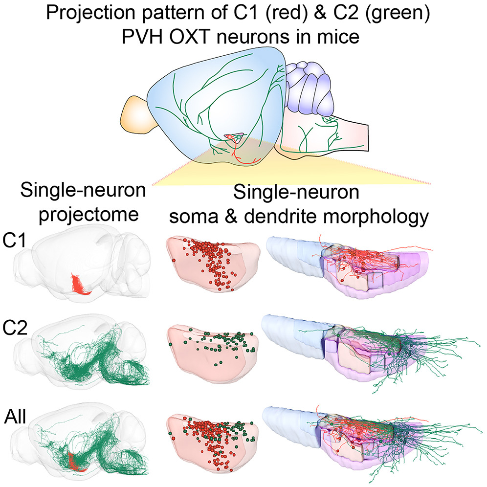

Selected publications
* Co-corresponding authors


For a complete list of Dr. Bian’s publications, please visit Google scholar PubMed
* Co-corresponding authors

Neuron 2024
Link
[PDF]
Single-neuron projectomes of mouse paraventricular hypothalamic nucleus oxytocin neurons reveal mutually exclusive projection patterns
Single-neuron projectomes of mouse paraventricular hypothalamic nucleus oxytocin neurons reveal mutually exclusive projection patterns
Humingzhu Li, Tao Jiang, Sile An, Mingrui Xu, Lingfeng Gou, Biyu Ren, Xiaoxue Shi, Xiaofei Wang, Jun Yan, Jing Yuan, Xiaohong Xu, Qing-Feng Wu, Qingming Luo, Hui Gong, Wen-Jie Bian*, Anan Li*, Xiang Yu*.
For a complete list of Dr. Bian’s publications, please visit Google scholar PubMed